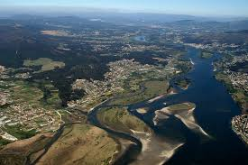
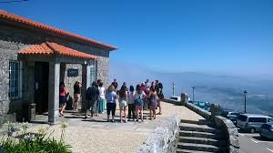
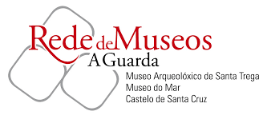

Visita i-Rochiño Visita A Guarda
Restaurantes Gastronómicos
A Guarda es uno de los enclaves turísticos más importantes de Galicia, en gran parte por el Monte Trega, lugar de visita obligada por sus interesantes valores arqueológicos.
Centro Urbano
 El Puerto pesquero se caracteriza por las casas típicas marineras, estrechas, de varios pisos y de gran colorido.
El Puerto pesquero se caracteriza por las casas típicas marineras, estrechas, de varios pisos y de gran colorido.
En el Puerto se encuentra el conventos de las Benedictinas, transformado a finales del XX en hotel. Subiendo unas empinadas escaleras se accede a la calle Colón, antigua calle que une la zona del puerto con el casco antiguo.
El casco urbano se organiza en torno al puerto pesquero, reflejo del pasado y presente marinero de A Guarda.
Calles antíguas
 En el privilegiado entorno natural que forma la desembocadura del río Miño se localizan estas cuatro playas a lo largo de los últimos dos kilómetros de la desembocadura y que forman una perfecta unidad.
En el privilegiado entorno natural que forma la desembocadura del río Miño se localizan estas cuatro playas a lo largo de los últimos dos kilómetros de la desembocadura y que forman una perfecta unidad.
Iglesias
El Estuario del Miño es el espacio natural más interesante de A Guarda. La desembocadura forma un estuario y está considerado como uno de los humedales más importantes de la Península con la confluencia de dos ecosistemas, el fluvial y el marítimo.
Patrimonio
En tan solo 20,5 km2 de superficie A Guarda posee un rico y variado patrimonio construido e inmaterial, parte de el distinguido como Bien de Interés Cultural (BIC). El patrimonio religioso abarca desde las pequeñas ermitas de Santa Trega, la Guía, San Cayetano y las Mercedes hasta las iglesias parroquiales de Salcidos, A Guarda y Camposancos y el antiguo convento de San Benito, hoy reconvertido en hotel. Cruces y cruceros como el de San Francisco frente a la ermita de Santa Trega, el crucero Pinto complementado con un peto de ánimas, en Salcidos, y el monumental Vía Crucis del monte son los ejemplos más representativos.
Red de museos
La Red de Museos de A Guarda está integrada por dos pequeños museos locales: el Museo del Monte Sta Trega, MASAT, centrado en lnos restos arqueológicos aparecidos en las excavaciones efectuadas en este yacimiento arqueológico